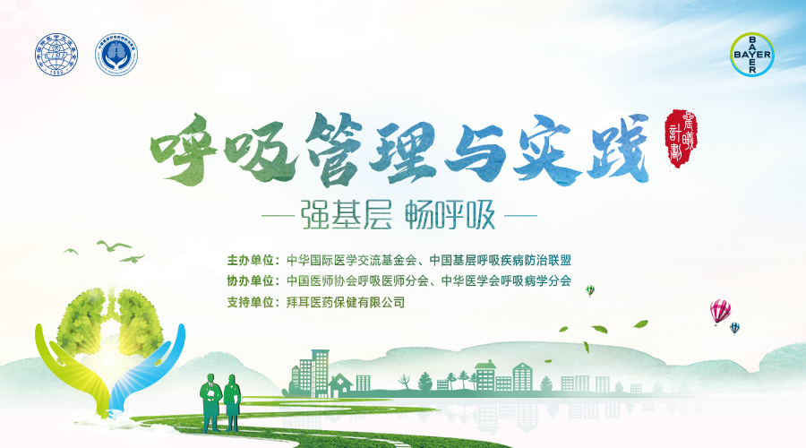
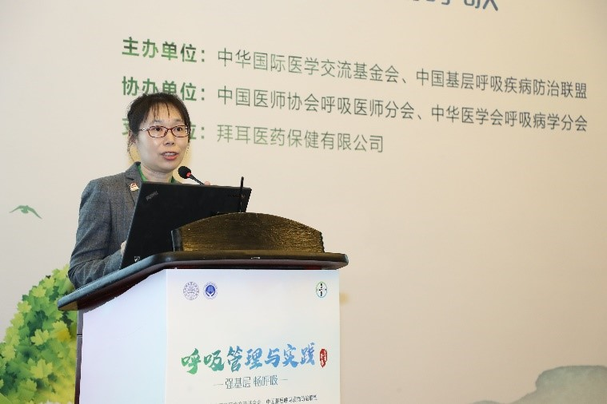
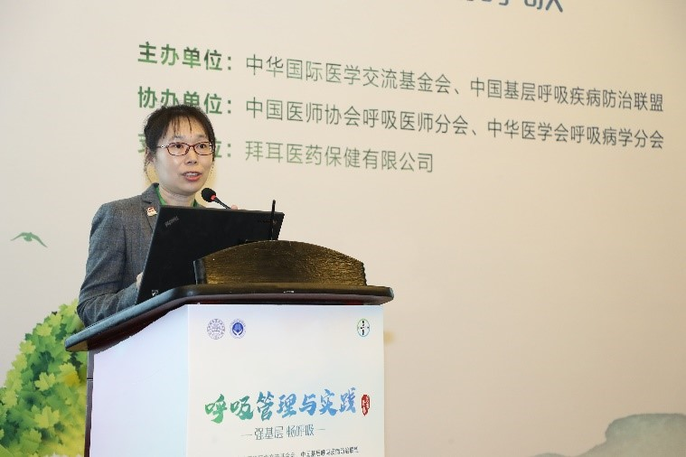
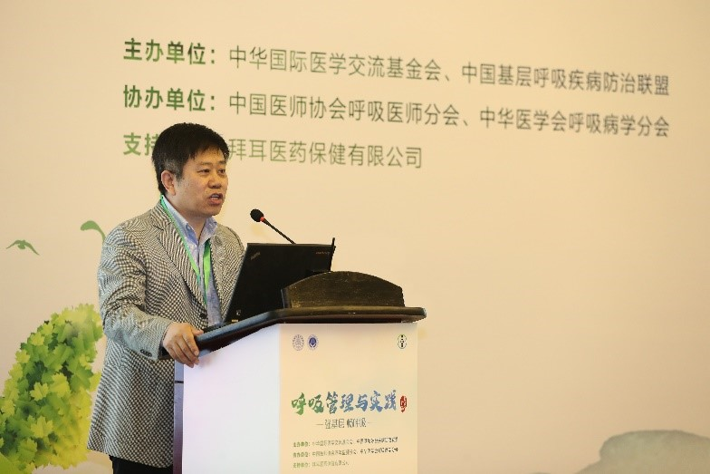
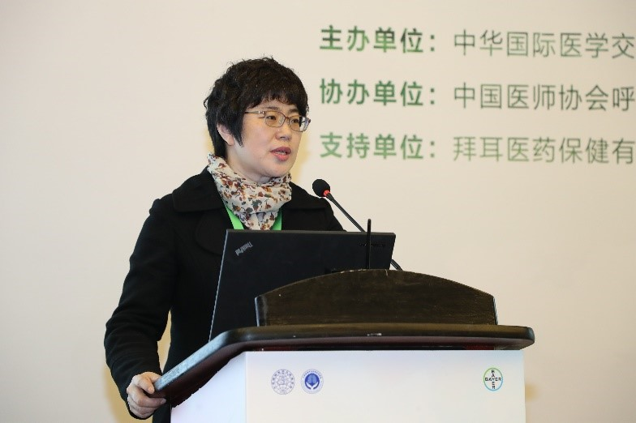
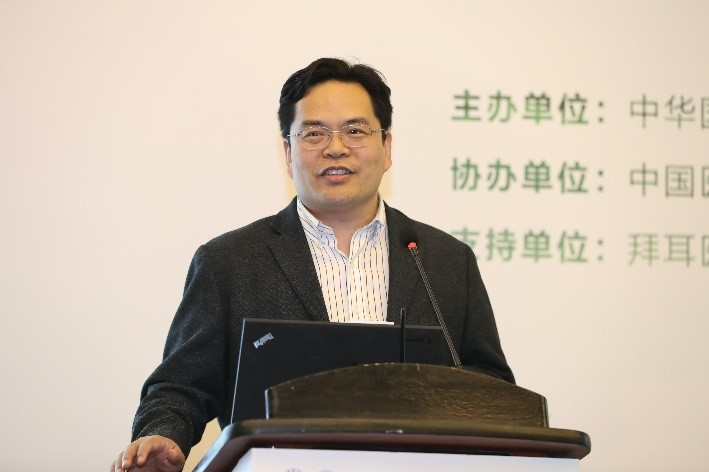
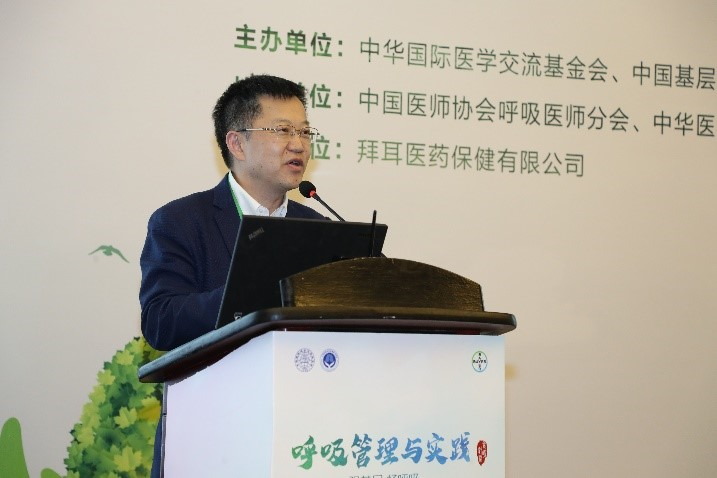

2019呼吸管理与实践项目在北京正式启动
在中华医学会呼吸病学分会、中国医师协会呼吸医师分会的支持下 ，由中华国际医学交流基金会，中国基层呼吸疾病防治联盟主办， 拜耳医药保健有限公司支持的 2019年“强基层，畅呼吸” 呼吸管理与实践——“晨曦计划”于2019年4月27日在北京正式启动。
该项目的设立是为了贯彻落实《国务院办公厅关于全面推开县级公立医院综合改革的实施意见》以及贯彻国家卫健委《呼吸学科医疗服务能力指南(2018)版》， 提升呼吸学科医疗服务能力，助力基层医院呼吸学科能力提升，同时通过整合三级医院呼吸学科资源， 促进其与县市级医院呼吸学科广泛的交流与合作，推动县市级医院呼吸医疗技术人才培养，提高广大人民群众的健康水平。
2019年4月27号呼吸管理与实践项目在北京扬帆启航！
2019年4月27号，呼吸管理与实践项目启动会在北京召开。来自县市级60多位呼吸科主任参加了此次会议，会议通过直播方式，与线上1000多医生和专家就呼吸学科常见疾病诊疗进展， 常见适宜性技术以及PCCM(呼吸与危重症学科规范化建设)的经验和新理念进行一整天的分享和热烈的讨论 ，气氛热烈，收效良好。
 项目启动仪式
项目启动仪式
本次会议由大会主席北京大学全科医学系主任、北京大学第一医院健康管理中心主任、中国基层呼吸疾病防治联盟执行主席迟春花教授致开幕辞， 并介绍了“呼吸管理与实践”—晨曦计划的项目内容。她重点介绍了呼吸学科面临机遇和挑战，以及此项目的后续工作安排。晨曦计划项目将分别在 25个城市举办学术会议，内容围绕呼吸学科常见疾病的诊疗进展，常见适宜性技术以及PCCM(呼吸与危重症学科规范化建设)的经验和新理念， 并举办以常见肺部感染为主题的病例大赛的。该项目将覆盖近2000名呼吸专科和基层医生，从而进一步提升对呼吸疾病患 者的诊治能力。随后，中华国际医学交流基金会鲁玉红主任，也介绍作为本次活动主办方之一基金会的宗旨和近年所做各项重要工作。
 中国基层呼吸疾病防治联盟执行主席 迟春花教授

中华国际医学交流基金会 鲁玉红主任
中国基层呼吸疾病防治联盟执行主席 迟春花教授

中华国际医学交流基金会 鲁玉红主任
【大会专题报告】
大会分为三个版块，第一个为“呼吸学科新进展”版块。来自吉林大学第二医院高鹏教授，中国医科大学第一医院王玮教授，山东大学齐鲁医院曲仪庆教授，内蒙古自治区人民医院刘慧招教授以及哈尔滨医科大学 第一附属医院任强医生等分享了肺小结节，慢阻肺的药物选择以及睡眠呼吸障碍等呼吸学科常见呼吸系统疾病的诊断和治疗新进展 。
 山东齐鲁医院 曲仪庆教授  中国医科大学第一医院 王玮教授第二版块，是由中日医院医发办主任贾存波主持“呼吸学科新建设”版块，来自华西医院呼吸与危重症医学科的梁宗安教授介绍了二级医院PCCM规范化建设标准， 白银市第一人民医院的达春和教授介绍慢阻肺分级诊疗在白银的实施，会议还邀请了来自优秀县市的代表分享PCCM学科管理的经验。
 中日医院 贾存波主任  华西医院 梁宗安教授 嘉祥县人民医院 刘长福教授
嘉祥县人民医院 刘长福教授
第三版块，是由山西大医院李萍教授主持的“学科新技术”版块，来自山西大医院的李萍教授，中日医院和北京大学第一医院 和第三医院的章巍、朱红、黄絮、刘敏教授分别就雾化吸入以及气管镜和呼吸机规范化操作等常见呼吸系统疾病的适宜技术进行了分享。
 山西大医院 李萍教授
山西大医院 李萍教授
最后，李萍教授对今天的会议进行了总结。她指出：这个项目的开展，将使得更多呼吸专科医生获益，促进呼吸学科发展， 造福呼吸疾病患者。“强基层，畅呼吸”呼吸管理与实践—晨曦计划项目将围绕“聚焦基层，推动呼吸疾病防治工作下沉”这一宗旨 深入推进我国呼吸疾病防治事业的发展。热切期待社会各方共同携手，持续为我国基层呼吸疾病诊疗与防治能力的提升做出贡献！